1. Instalación de phpadmin¶
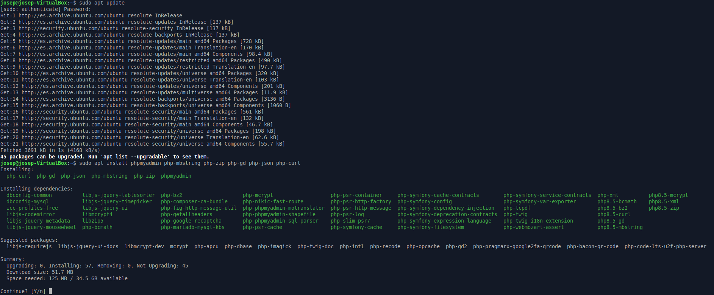
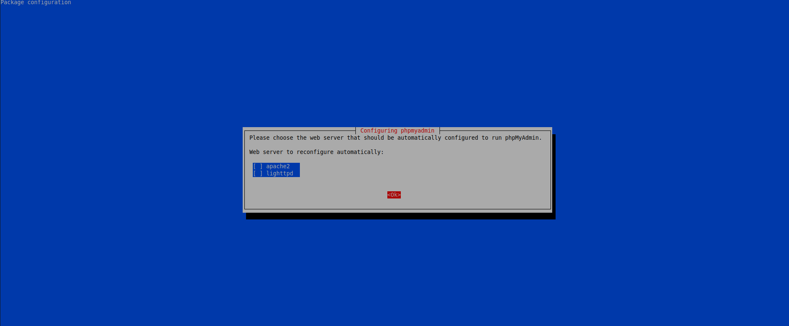
Cuidado
No seleccionamos ninguno ya que lo queremos en nginx y no en ninguna de estas 2, lo configuraremos manualmente en el fichero de configuración de nginx.
2. Insertamos el código para que pueda servir mediante nginx.¶
Copiamos el fichero default y le pondremos phpadmin:
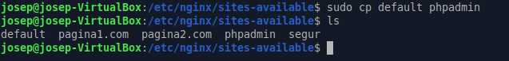
Procederé a abrir phpadmin y le pondremos este código
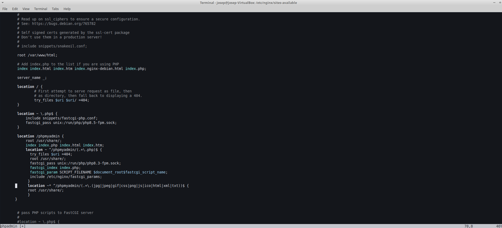
En location y en la parte de root se debe poner la ruta donde esta phpmyadmin para que funcione, sino, no funcionara.
3. Activamos el sitio con ln -s¶
sudo ln -s /etc/nginx/sites-available/phpadmin /etc/nginx/sites-enabled/phpadmin

4. Comprobamos la configuración y reiniciamos servicio¶
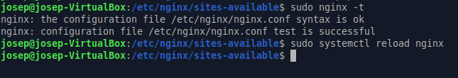
5. Editamos el fichero hosts¶
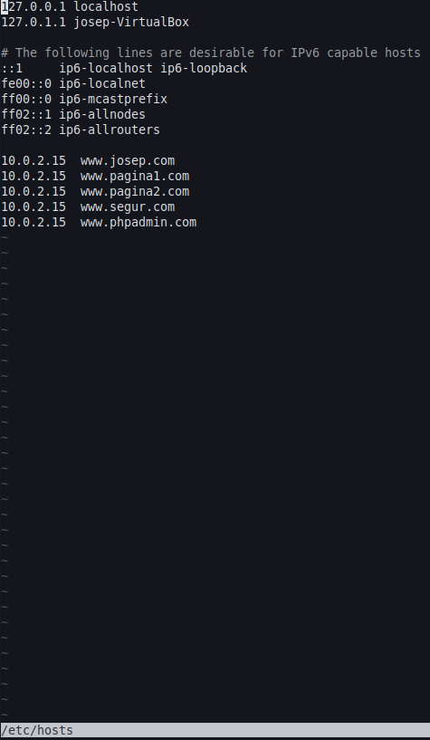
6. Comprobación¶
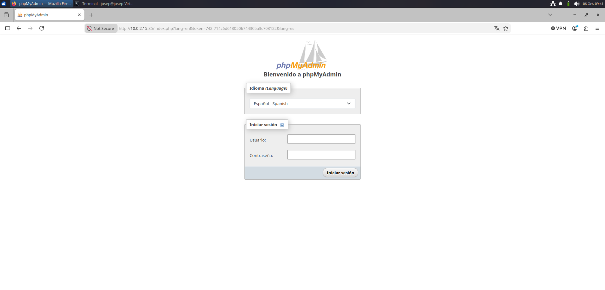
7. Permetre l’Accés per Contrasenya del root de MySQL¶
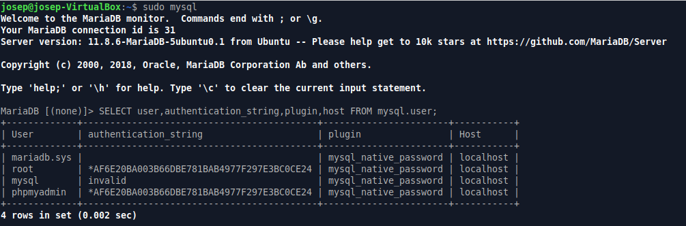
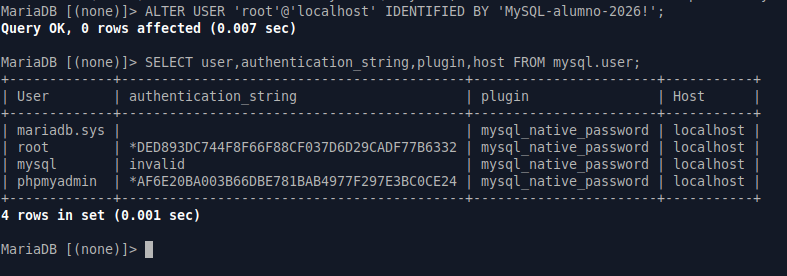
Cuidado
El comando que hay en aules para cambiar la contraseña para MariaDB no es compatible, seria este comando:
ALTER USER 'root'@'localhost' IDENTIFIED BY 'MySQL-alumno-2026!
8. Configuració de l’Accés per Contrasenya per a un Usuari Dedicat de MySQL¶
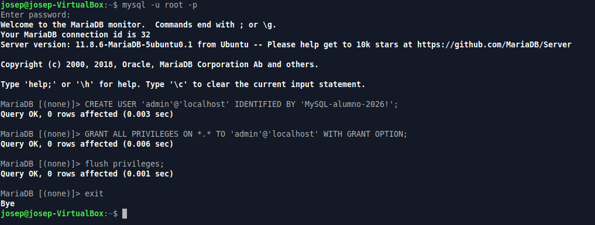
9. Comprobamos¶
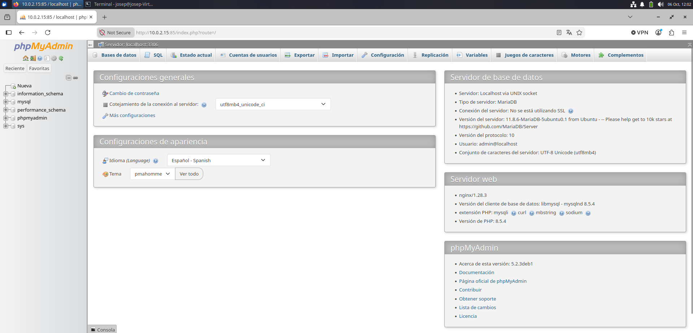
10. Assegura la Instància de phpMyAdmin¶
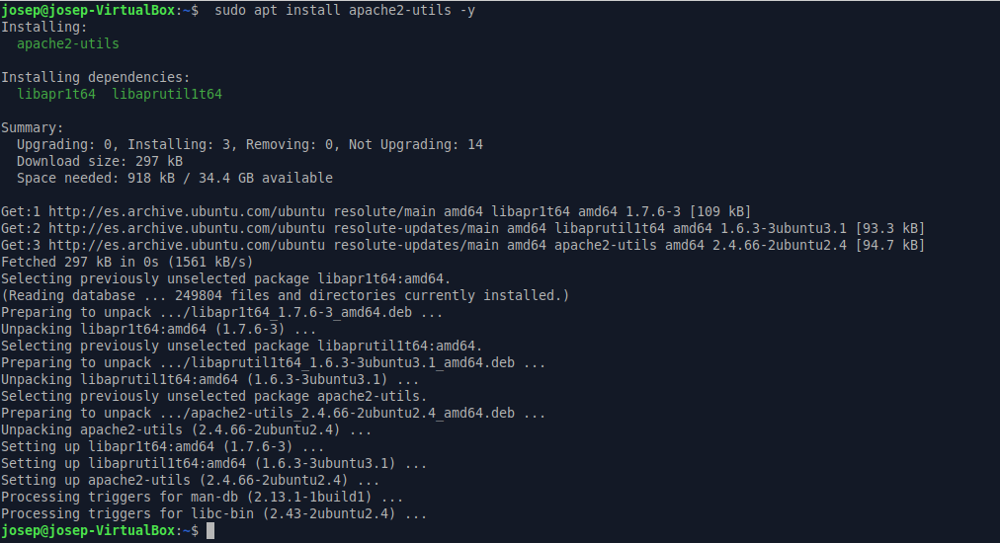
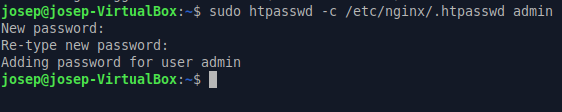
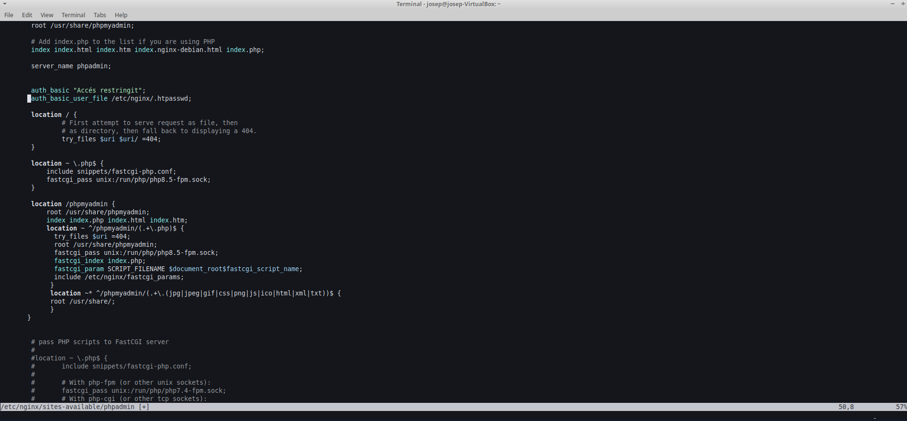
- auth_basic "Accés restringit";
- auth_basic_user_file /etc/nginx/.htpasswd;
Recargamos el servidor nginx para que aplique la configuración y protegemos los ficheros correspondientes.
11. Creamos una carpeta y añadimos este contenido¶
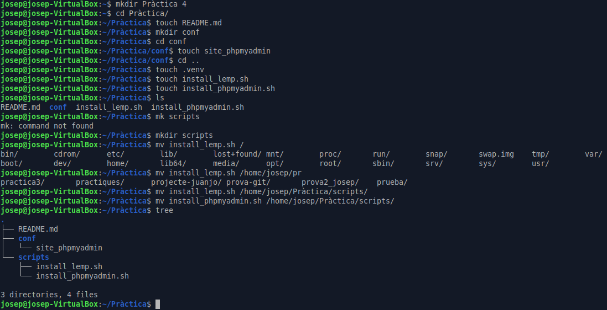
12. Subimos todo el contido a GitHub pages¶